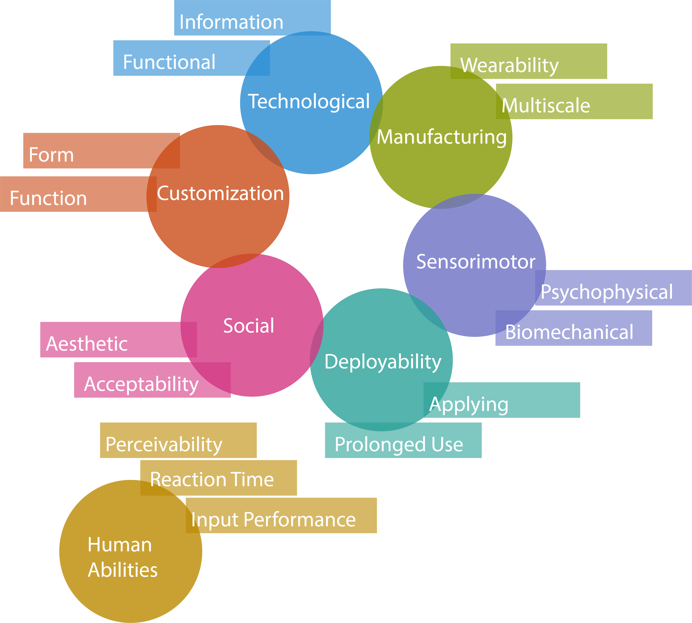

Page title

Tables
Tables should be given the class of table.
| Wearability Focus | Design Criteria | Associated Questions |
|---|---|---|
| Technology | Function | Where should an antenna be placed so that it is not shielded by the body? How can skin contact of an EMG electrode be ensured |
| Information | Where should an accelerometer be placed to collect the most information? What is the ideal location for measuring blood oxygen levels? | |
| Sensorimotor | Psychophysical | How much attention does the device demand when worn? Does it start irritating the user after prolonged use? |
| Biomechanical | Does the device inhibit the range of motion of the user? Can the user reach the device? | |
| Human Abilities | Perception | Does the device provide output which the user can interpret? |
| Reaction Time | How well can the user react to information provided by the device? | |
| Input Performance | How well can users provide explicit information to the device? |